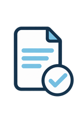
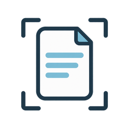
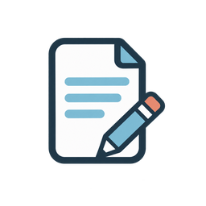
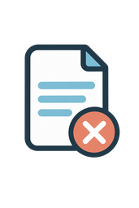
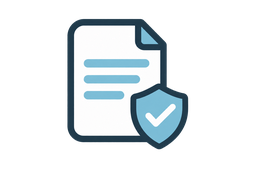
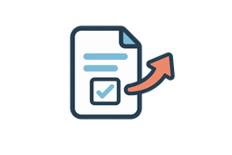
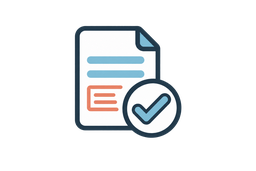
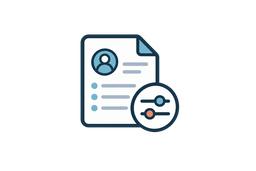

このまま使ってよいか、確認したい方へ。
現在使っている契約書や雛形、取引先から提示された契約書を確認し、分かりにくい部分や仕事内容に合っていない可能性がある部分を整理します。
- 雛形が自分の仕事に合っているか見直したい
- 契約内容を分かりやすく説明してほしい
- 必要な項目や、取引先から提示された内容を確認したい
WORRIES
個人で仕事をしていると、契約書について考える場面はあっても、何をどこまで決めればよいのか分からないことがあります。
分からない部分をそのままにせず、まずは現在の状況から整理してみましょう。
FOR YOUR WORK
現在の状況によって、必要な対応は異なります。
つむぎ行政書士事務所では、契約書の有無にかかわらず、仕事内容や取引の流れを伺ったうえで、次に何をすべきか整理します。

現在使っている契約書や雛形、取引先から提示された契約書を確認し、分かりにくい部分や仕事内容に合っていない可能性がある部分を整理します。
契約書がない段階でも、仕事内容や取引の進め方を伺い、契約書が必要か、事前にどのような条件を決めておくとよいかを整理します。
OUR SUPPORT
つむぎ行政書士事務所では、個人事業主の契約書に関するご相談を承っています。
難しい言葉を並べて一方的に説明するのではなく、普段の仕事の流れに置き換えながら、必要な内容を一つずつ確認します。
契約書の作成をすぐに勧めるのではなく、現在の契約書を活用できるか、どのような対応が必要かを整理したうえでご案内します。
ご相談いただけること
契約書の内容や当事者間の状況によっては、当事務所で対応できない場合があります。その場合は、必要に応じて適切な相談先をご案内します。
FOR SOLE PROPRIETORS
業種を問わず、お客さまや取引先と直接契約して、商品・サービス・制作物などを提供している個人事業主の方が対象です。
Web・クリエイティブ
Webデザイナー、ライター、カメラマン、イラストレーター、動画制作者など
講師・コンサルティング
オンライン講師、コーチ、コンサルタント、研修講師など
サロン・教室
美容サロン、各種教室、レッスンサービスなど
商品・作品販売
ハンドメイド作家、オリジナル商品販売、オンラインショップ運営者など
業務支援
SNS運用、オンライン事務、広報支援、各種代行サービスなど
上記にない業種や契約書についてもご相談いただけます。対応可能か分からない場合も、まずは30分無料相談をご利用ください。
CHECK POINTS
必要な項目は仕事内容によって異なります。次のような内容を、仕事の流れに合わせて確認します。




FLOW
必要な対応と見積もりを確認し、納得した場合のみご依頼いただけます。
相談方法・希望日時・現在のお悩みをお送りください。
事務所からの連絡をもって、予約確定となります。

確認したい契約書がある方のみ、事前にお送りください。
オンラインまたは事務所で、仕事内容や不安を伺います。

必要な対応と料金をご案内します。依頼はその後にご検討いただけます。
OUR PROMISE
仕事内容や取引の場面に置き換えてお伝えします。
何を決めるかという段階からご案内します。
見積もりを確認してからご検討いただけます。
相談しやすい方法を選べます。

仕事内容や取引の流れに合わせて整理します。
ABOUT
つむぎ行政書士事務所 代表行政書士
契約書には、普段あまり使わない言葉や、意味を判断しにくい表現が数多くあります。だからこそ、気軽に質問できる相手が必要だと考えています。
仕事内容や現在の状況を伺い、難しい言葉を仕事の流れに置き換えながら、一つずつ分かりやすく整理します。
予約制の相談スペースで、資料を一緒に確認できます。
遠方の方や来所が難しい方も、ご自宅などから相談できます。
FEE
初回相談
30分無料
正式依頼の料金は内容により異なります。無料相談で必要な対応を確認し、依頼前に見積もりをご案内します。
現在の状況と不安を伺います。
確認・修正・作成などを整理します。
正式依頼の前に料金をお伝えします。
納得した場合のみご依頼ください。
見積もりを確認してから、依頼するか決められます。相談だけでも構いません。
FAQ
はい、ご相談いただけます。仕事内容や取引の流れを伺い、契約書が必要か、事前にどのような内容を決めておくとよいかを整理します。
はい、確認できます。雛形が現在の仕事内容や取引方法に合っているか、分かりにくい部分や不足している可能性がある項目を確認します。
ご相談いただけます。ただし、契約内容や当事者間の状況によっては、当事務所で対応できない場合があります。初回相談で状況を確認し、対応の可否をご案内します。
30分無料相談では、仕事内容、契約書の有無、不安に感じている点を伺い、今後必要になりそうな対応をご案内します。契約書全文の詳細な確認や修正、作成は、正式なご依頼後に行います。
いいえ。無料相談後に、必要な対応と見積もりをご案内します。内容をご確認いただき、納得した場合のみ正式にご依頼ください。
はい。相談前に指定の方法で契約書をお送りいただき、オンラインでお話を伺います。資料の送付方法は、予約確定後にご案内します。
幅広い業種の方からご相談を承ります。ただし、契約書の種類や内容によっては対応できない場合があります。対応可能か分からない場合も、まずは初回相談でお問い合わせください。
当事者間で意見の対立が生じている場合など、状況によっては行政書士が対応できないことがあります。現在の状況を伺い、当事務所で対応できない場合は、適切な相談先をご案内します。
RESERVATION
契約書の有無にかかわらず、仕事内容や取引の流れを伺い、必要な対応を一緒に整理します。
30分無料相談を予約する仕事と安心を、契約でつむぐ。
契約書がまだなくても、まずはご相談いただけます。初回相談だけでも問題ありません。ご予約は、事務所からの日程確認の返信後に確定となります。
本フォームはポートフォリオ用のデモです。現段階では入力内容の送信・実際の予約は行われません。